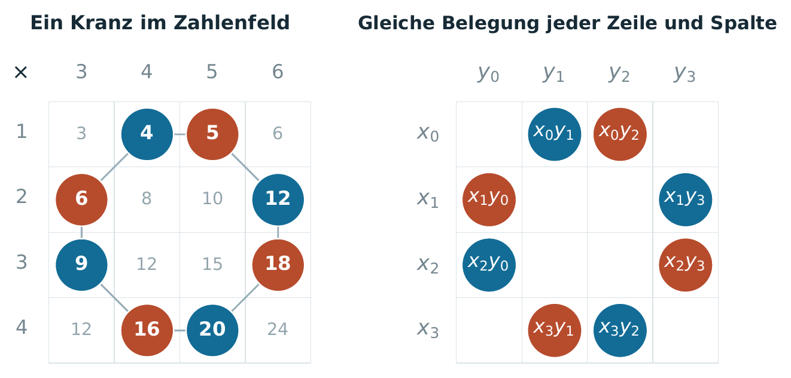
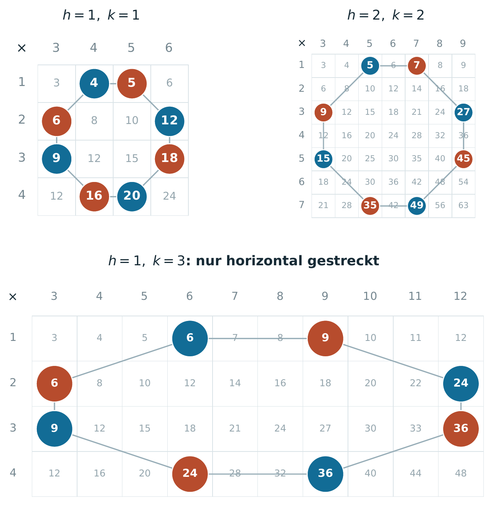
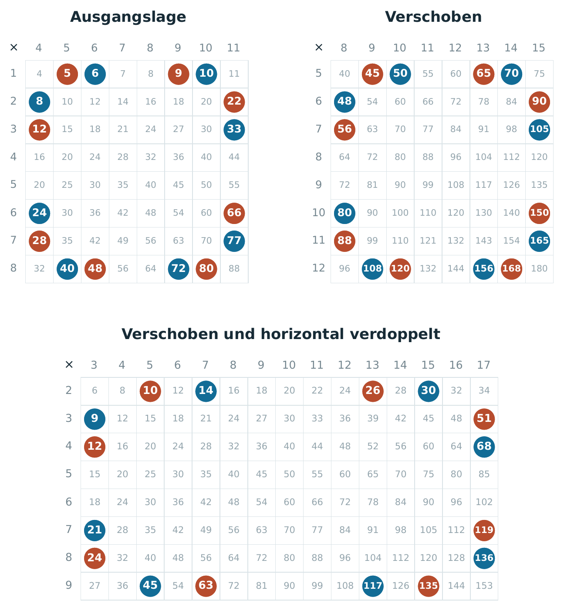
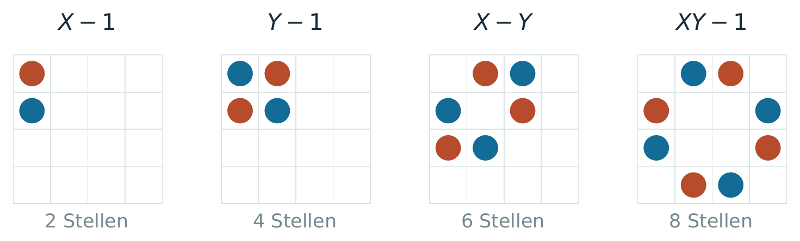
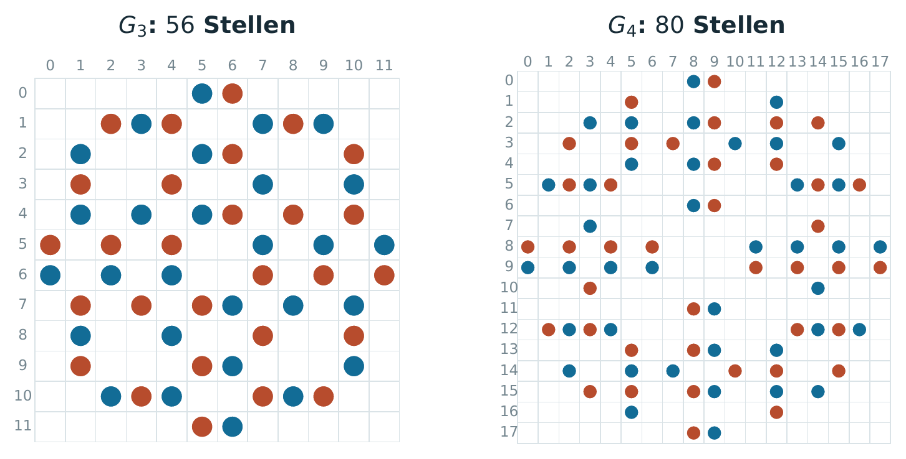

Topographische Experimente
· Notiz
Ausgangspunkt ist die Überlegung, dass eine veränderte räumliche Anordnung von Zeichen – ihre Rekonfiguration – neue mathematische Beziehungen sichtbar machen und zu neuen Resultaten führen kann. Sie knüpft an Abschnitt 6.3 „Topographie der Zeichen“ meiner Arbeit Die Oberfläche der Mathematik an.
KI ermöglicht es, sehr große Mengen von Mustern in unterschiedlichen Figurationen systematisch zu untersuchen. Mit ihrer Hilfe führte diese Überlegung zu den folgenden Fundstücken. Das Projekt entstand im Rahmen von Überlegungen zu Terence Taos „Math 2.0“.
Hier sind zwei kleine Experimente, die mit KI entdeckt wurden:
i) Zahlenkränze und Potenzrahmen
Ordnet man die Produkte natürlicher Zahlen in einer Multiplikationstafel an, findet man den Grundkranz K2: Acht Stellen bilden zwei Farbgruppen mit gleicher Summe, Quadratsumme und gleichem Produkt. Durch Kombination entstehen die Potenzrahmen F4 und F6 mit vier bzw. sechs gleichen Potenzsummen – auch nach Verschiebung und unabhängiger Achsenstreckung. Durch wiederholtes Kombinieren von vier passend verschobenen und umgefärbten Kopien lässt sich jeder endliche Grad erreichen. Das liefert räumliche Konstruktionen zum Prouhet-Tarry-Escott-Problem.
Für Rekursionstafeln Mij = uiuj mit un+2 = λun+1 − un liefern G3 und G4 drei bzw. vier gleiche Potenzsummen. Hier bleiben Verschiebung und gleichmäßige Streckung erlaubt. Alle fünf Figuren erhalten außerdem die Produktgleichheit.
| Figur | Stellen | Multiplikationstafel | Alle Rekursionstafeln |
|---|---|---|---|
| K2 | 8 | 2 | 2 |
| F4 | 16 | 4 | 2 |
| F6 | 48 | 6 | 2 |
| G3 | 56 | 4 | 3 |
| G4 | 80 | 6 | 4 |
Zahlenkränze und Potenzrahmen – Bilder und Tabellen
Auswahl aus „Zahlenkränze und Potenzrahmen“. Zum Vergrößern ein Bild anklicken.




| Potenz k | Potenzsumme je Farbe |
|---|---|
| 1 | 270 |
| 2 | 14 578 |
| 3 | 945 270 |
| 4 | 66 119 986 |

| Potenz k | Potenzsumme je Farbe |
|---|---|
| 1 | 5994 |
| 2 | 2 592 470 |
| 3 | 1 372 751 874 |
| 4 | 794 287 759 046 |
| 5 | 483 793 566 201 954 |
| 6 | 305 120 225 658 672 710 |



Weitere Ansichten der Zahlenkränze


ii) Sechseckrahmen
Ordnet man die Dreieckszahlen in Zeilen der Längen 1, 2, 3, … an, ergibt die alternierende Summe der sechs Ecken bei regelmäßigen Rahmen lageunabhängig D = r3, bei passenden Scherungen D = hr2 (h: horizontale Breite, r: Zeilenabstand). Die Figuren machen so Invarianten sichtbar und liefern systematisch neue Zahlenidentitäten.
Sechseckrahmen – alle Abbildungen
Zum Vergrößern ein Bild anklicken.